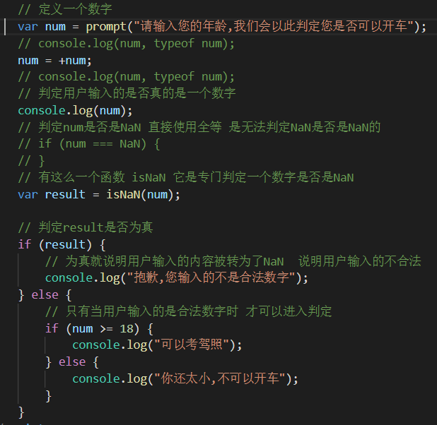

if语句
语法：
if (expression1) {
} else if (expression2) {
} else {
}
执行机制:
先对expression1做判定，如果为真，执行对应的代码块中的代码执行完毕，分支结束
如果expression1为假，再根据这种机制往下对其它的表达式做判定，如果遇见了真的，就执行对应的代码块，如果都没有，执行else里的代码
注： if代码块是一定要有的 else if可以出现多个可以出现一个可以不出现 else 可以出现 可以不出出现 如果出现 只能够出现一次
注： 如果 if语句的代码块中，只有一条代码，可以省略{}
例如：

小提示：快捷键“ alt + shift + a ”在JS中可以添加多行注释
三元运算符：
是针对if else分支结构的一种简化
语法： expression ? result1 : result2
规则： 对expression做判定， 如果为真，则使用result1. 如果为假，则使用result2
switch语句
语法：
switch(expression) {
case value:
code...
break;
case ……
break;
default:
break;
}
它是对expression做判定，最终得到一个结果 然后使用该结果依次与每一个case的value进行比较(比较方式是全等)，如果匹配到了，执行对应的代码。如果匹配不到，继续往下，直到匹配到了，或者到了最后还没有匹配到，则会执行default的代码。
注： 如果break没写，会出现一种“落空”现象。也就是说：执行完当前case的代码之后，会继续执行下一个case的代码。
例如：